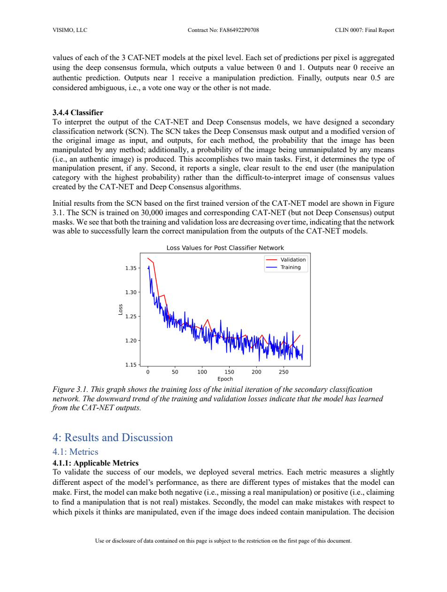
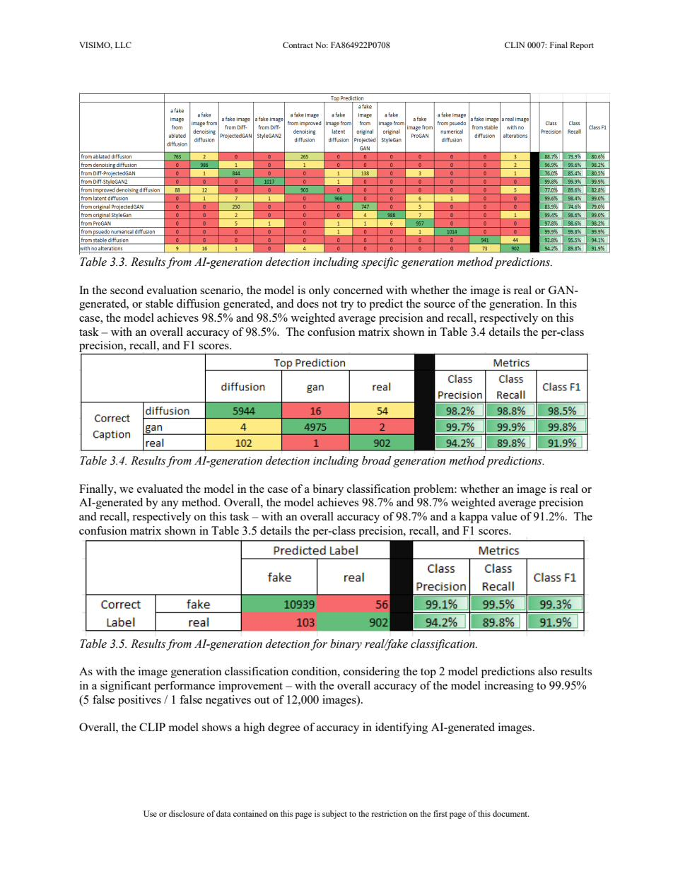
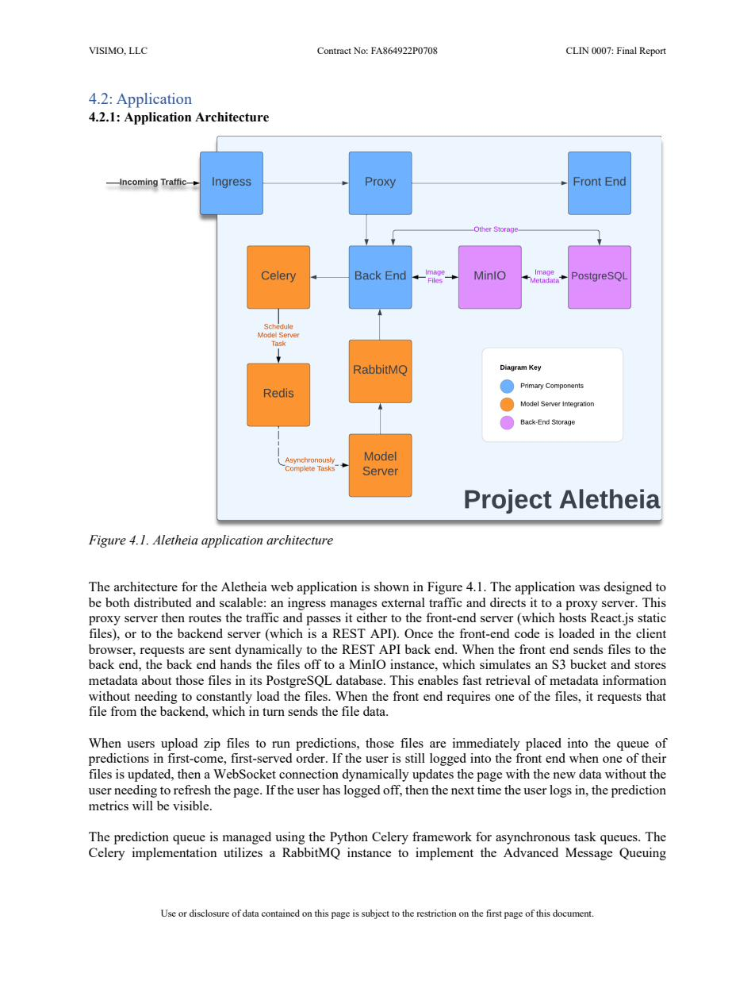
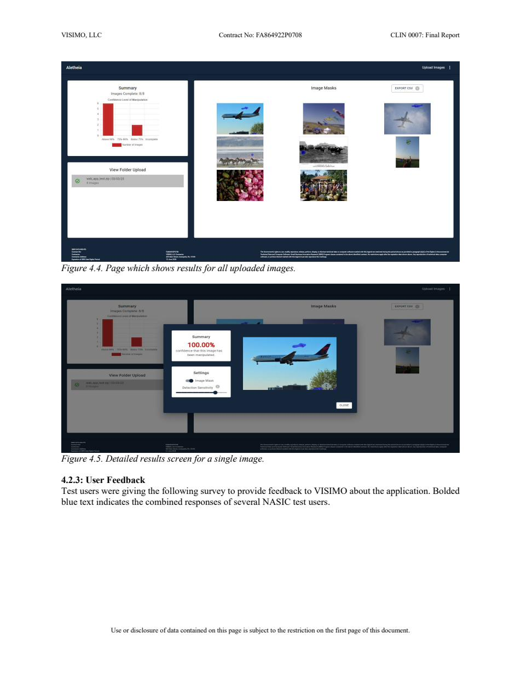

SBIR Phase II STTR
A deep-learning system for detecting and localizing manipulation in raster digital images, developed for the National Air and Space Intelligence Center (NASIC).
Section 1
Project Aletheia is a Phase II STTR software tool for detecting manipulation in raster digital images (JPEG, PNG, etc.). Digital images are a primary intelligence source and a prime target for adversarial manipulation. Skilled editors can hide modifications from human reviewers, especially when analysts lack ground truth.
A computer-based tool offers four critical advantages over human review:
The project was structured across seven milestones: project kickoff, dataset acquisition, CNN architecture selection, model training, validation and verification, front-end deployment, and final reporting.
Section 2
Aletheia targets three categories of manipulation that alter the semantic content of an image. Each leaves a distinct forensic signature in the pixel and compression domain.
Merging large numbers of neighboring pixels or texture patches to modify a region — using surrounding colors and patterns to fill or remove content. Analogous to digital cloning or brush tools.
Example: Removing the rope holding a person aloft to make them appear to levitate.
repetition artifacts unnatural texturesCopying one or more semantic regions within the same image and pasting them elsewhere, typically to duplicate content (e.g., enlarging a flock of birds).
Example: Duplicating aircraft in a formation to exaggerate fleet size.
edge blending artifacts noise inconsistencyCopying a region from a separate donor image and inserting it into the target. The donor and host may have different camera sensors, lighting, and compression histories.
Example: Pasting a weapon system into a benign scene from a different photograph.
DCT coefficient mismatch noise level mismatchSection 3
Dataset selection criteria were defined with NASIC: images should originate from public social media sources, focus on defense-relevant (especially aerospace) content, be captured by amateur commercial cameras, and every manipulated image must include a ground truth pixel mask marking the exact region altered.
| Dataset | Manipulation | Images | Notes |
|---|---|---|---|
| DEFACTO Copy-Move | Copy-Move | 19,000 | MS-COCO source; algorithmic manipulation; pixel masks included |
| DEFACTO Splicing | Splicing | 105,000 | MS-COCO source; largest subset; pixel masks included |
| DEFACTO Inpainting | Inpainting | 25,000 | MS-COCO source; removal-type manipulations; pixel masks included |
| CASIA 2 | Copy-Move & Splicing | 5,000 | Varied content; authentic + two manipulation types; increases robustness |
| IMD2020 Extended | Mixed / GAN Inpainting | Thousands | Human-made manipulations; 32+ camera types; used for retraining to reduce DEFACTO bias |
| Object Type | Inpainting Images | Copy-Move Images | Spliced Images | Total |
|---|---|---|---|---|
| Airplanes | 571 | 381 | 11,037 | 11,989 |
| Buses | 1,711 | 884 | 5,669 | 8,264 |
| Trains | 647 | 408 | 2,380 | 3,435 |
| Trucks | 1,994 | 1,291 | 11,085 | 14,370 |
| Dataset | Manipulation(s) | Images | Reason Not Selected |
|---|---|---|---|
| Fidac | Copy-move, splicing, color enhancement | 600 | No manipulation masks; too small |
| MICC | Copy-move | 1,000 | No manipulation masks |
| FAU | Copy-move, splice, noise addition | Unknown | No manipulation masks |
| CG1050 | Copy-move, cut-paste, colorizing, retouching | 1,000 | Includes out-of-scope manipulation types |
| Facebook AI Image Similarity | Similar copied image | 1M+ | No specific manipulation masks; different task definition |
Section 4
Fifty-four recent academic papers were surveyed; eleven models were shortlisted for evaluation. The final architecture chains three components: a pixel-level detector, an ensemble consensus layer, and a secondary classification network.
| Role | Model | Rationale |
|---|---|---|
| Primary detector (all types) | CAT-Net | Best overall performance on DEFACTO and CASIA 2; specifically exploits JPEG compression artifacts (DCT + Q-Table analysis) |
| Copy-Move candidate | MVSS-Net | Evaluated; combines noise and edge detectors; outperformed by CAT-Net on this task |
| Inpainting candidate | HP-FCN | Evaluated; inpainting-specific; outperformed by CAT-Net on this task |
CAT-Net (Compression Artifact Tracing Network) is a deep CNN with two parallel processing branches that are fused to produce a binary manipulation mask.
For each pixel, outputs from all three CAT-Net models are aggregated into a single score in [0, 1]:
The SCN takes the deep consensus mask and a modified version of the original image as inputs. It outputs four class probabilities: authentic, inpainting, copy-move, and splicing. Trained on 30,000 images using CAT-Net outputs as labels.

Section 5
While outside the original Phase II scope, VISIMO conducted additional R&D to address AI-generated imagery. Initial testing showed the base Aletheia tool detected all AI-generated test images at 100% confidence (from DALL-E, Midjourney, and VISIMO's CGAN algorithm), but struggled to determine whether the entire image or only part of it was AI-generated — motivating a dedicated model.
The CLIP (Contrastive Language-Image Pre-Training) model was fine-tuned to classify images as real or AI-generated. Image-caption pairs are fed through separate image and text encoders to create embeddings in a shared space; similarity between embeddings determines classification. Weights are learned via ADAM optimization minimizing combined cross-entropy loss across image and text modalities.
| Image Generation Method | Class | CLIP Caption |
|---|---|---|
| ADM | Diffusion | a fake image from ablated diffusion |
| DDPM | Diffusion | a fake image from denoising diffusion |
| PNDM | Diffusion | a fake image from pseudo numerical diffusion |
| Stable Diffusion | Diffusion | a fake image from stable diffusion |
| IDDPM | Diffusion | a fake image from improved denoising diffusion |
| LDM | Diffusion | a fake image from latent diffusion |
| ProjectedGAN | GAN | a fake image from original ProjectedGAN |
| StyleGAN | GAN | a fake image from original StyleGan |
| ProGAN | GAN | a fake image from ProGAN |
| Diff-ProjectedGAN | GAN | a fake image from Diff-ProjectedGAN |
| Diff-StyleGAN2 | GAN | a fake image from Diff-StyleGAN2 |
| Real | Real | a real image with no alterations |

| Evaluation Task | Precision | Recall | Overall Accuracy | Top-2 Accuracy |
|---|---|---|---|---|
| Fine-grained generation method (12 classes) | 92.2% | 91.9% | 91.9% | 99.4% |
| Broad category (Diffusion / GAN / Real) | 98.5% | 98.5% | 98.5% | — |
| Binary: Real vs. Any AI-Generated | 98.7% | 98.7% | 98.7% | 99.95% |
Section 6
The class imbalance inherent in manipulation detection (manipulated pixels are typically ~5% of an image) makes pixel accuracy misleading — a model predicting all pixels as authentic achieves ~96% accuracy. The following metrics provide a more informative picture:
| Metric | Formula | What It Measures |
|---|---|---|
| Pixel Accuracy | (TP + TN) / Total | Baseline correctness; misleading due to class imbalance |
| Mean Pixel Accuracy | avg(acc_authentic, acc_manip) | Balances accuracy across both pixel classes |
| Precision | TP / (TP + FP) | Of predicted manipulated pixels, how many are truly manipulated |
| Recall | TP / (TP + FN) | Of all manipulated pixels, what fraction was detected |
| F1 Score | 2PR / (P + R) | Harmonic mean of precision and recall |
| IoU (Positive) | TP / (TP + FP + FN) | Overlap between predicted and true manipulation mask |
| Mean IoU | avg(IoU_pos, IoU_neg) | IoU averaged across both pixel classes |
| Cohen’s Kappa (κ) | 2(TP·TN − FP·FN) / … | Agreement above random chance; >0 = better than chance; >0.6 = substantial |
Results from the deep consensus model evaluated across manipulation types:
| Metric | Splicing | Inpainting | Copy-Move | Authentic |
|---|---|---|---|---|
| Pixel Precision | 0.646 | 0.639 | 0.595 | — |
| Pixel Recall | 0.854 | 0.911 | 0.812 | — |
| Pixel Cohen’s κ | 0.710 | 0.740 | 0.672 | 0.727 |
| Classifier Precision | 0.394 | 0.545 | 0.373 | 0.912 |
| Classifier Recall | 0.701 | 0.279 | 0.268 | 0.939 |
| Classifier Cohen’s κ | 0.262 | 0.217 | 0.142 | 0.904 |
The DEFACTO dataset's algorithmic manipulation generation introduces systematic biases: spliced objects are restricted to context-invariant shapes; copy-move duplicates only along cardinal axes; inpainting focuses on simple backgrounds. Retraining with the IMD2020 Extended dataset (human-made manipulations, 32+ camera types, GAN inpainting) was performed to reduce sensitivity to these artifacts.
Section 7

| Component | Technology | Role |
|---|---|---|
| Ingress / Proxy | NGINX | Routes incoming traffic to front end or REST API backend |
| Front End | React.js | Single-page application; WebSocket connection for live result updates without page refresh |
| Back End | Python REST API | Authentication, file routing, PostgreSQL interactions, WebSocket publisher |
| Object Storage | MinIO (S3-compatible) | Stores uploaded and processed image files; metadata in PostgreSQL for fast retrieval |
| Database | PostgreSQL | Image metadata, prediction results, user data |
| Task Queue | Python Celery + RabbitMQ (AMQP) | First-come-first-served prediction job queue; asynchronous processing |
| Cache / Scheduler | Redis | Celery task cache and recurring task schedule management |
| Model Server | Python Flask | Loads CAT-Net / Deep Consensus into GPU memory; executes predictions on request |
| Deployment | Docker Compose / Kubernetes-ready | Containerized; scalable to cloud or private network with minimal additional configuration |
| Authentication | Local credentials (SSO-ready) | Currently local; SSO framework in place for scaling to NASIC identity provider |

NASIC test users completed structured surveys after using the deployed application. Analysis was conducted on batches of 1–5 images across multiple formats (JPG, JFIF, GIF, TIF, PNG, BMP, WEBP).
Section 8
All seven project objectives were successfully completed. The combined CAT-Net, Deep Consensus, and SCN pipeline demonstrates strong pixel-level manipulation detection with >97% manipulation detection recall, and the distributed web application was deployed and validated with real NASIC users.